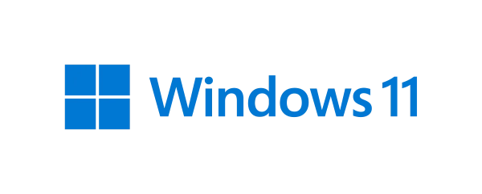

Programové vybavení (software) je podmínkou využití technického vybavení (hardware). V raných dobách
počítačové éry byly programy vytvářeny vždy pro konkrétní hardware. V okamžiku, kdy počítače začaly být
produkovány ve větších sériích, objevila se i potřeba vývoje speciálních systémových programů, které by
obstaraly základní operace s hardwarem a nabídly prostředí pro běh aplikací, tj. programů určených pro
konkrétní účely.
Základním programovým vybavením počítačů (a jim podobných zařízení) jsou operační systémy (OS - Operation
System). Jejich nejdůležitější funkcí je zajištění řízení hardware. To má na starosti jádro systému, které
tvoří subsystémy pro správu procesoru, paměti, diskových médií a dalších zařízení. Jádro pro své operace
vyžaduje instalaci ovladačů jednotlivých zařízení (drivers) a s jejich pomocí zpřístupňuje technické
vybavení běžícím procesům.
Současné OS rozdělujeme nejčastěji podle typů zařízení, pro která jsou určeny. Existují systémy pro síťové servery (např. MS Windows 2012 Server, Linux, Unix), pro běžné osobní počítače - desktopy, notebooky, netbooky (např. MS Windows, Linux Ubuntu, OS X), pro mobilní zařízení (Android, Symbian, Windows Phone, iOS) i speciální RTOS (Real-Time Operating System - systémy reálného času), které zajišťují provoz „chytrých“ zařízení, jakými jsou robotické kamery využívané pro sportovní přenosy, měřící přístroje na orbitálních stanicích nebo jednotky pro řízení různých průmyslových procesů. Zatímco u desktopového systému je možné pozdržet dokončení některých operací a provádět paralelně jiné operace, v případě RTOS je nezbytné provádět operace bez prodlevy a s vysokou spolehlivostí v reálném čase.
